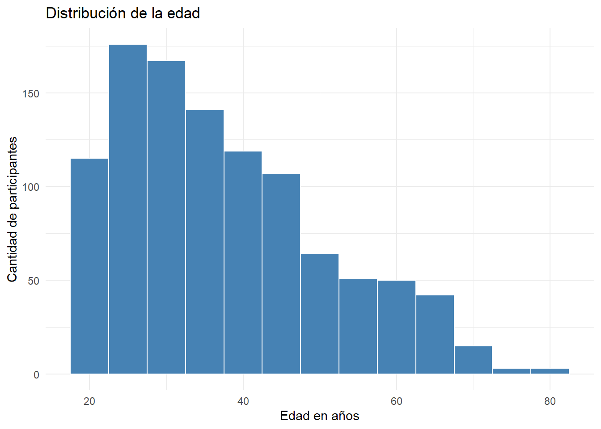
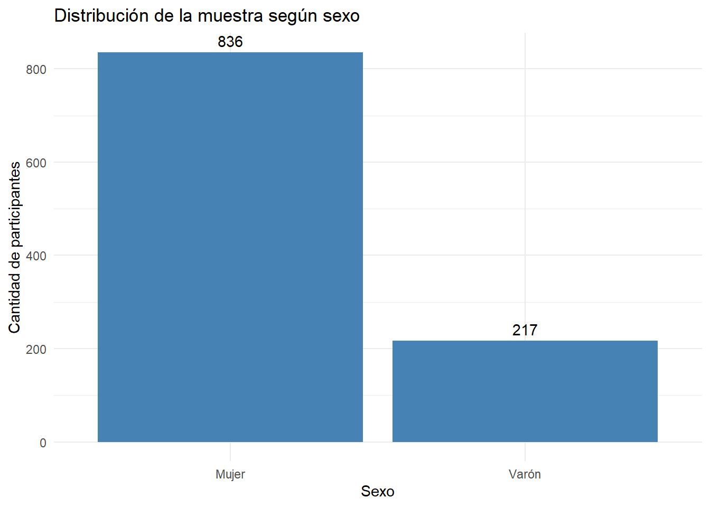
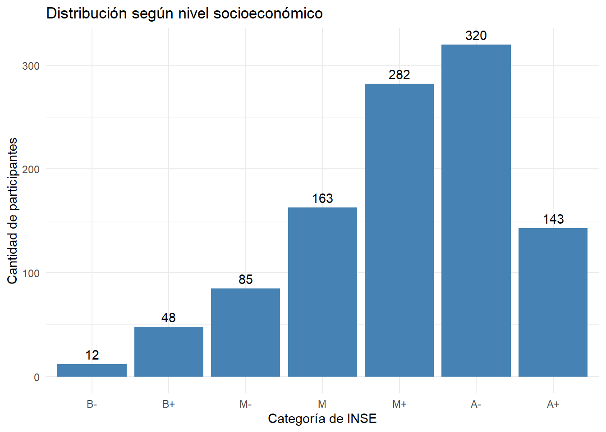
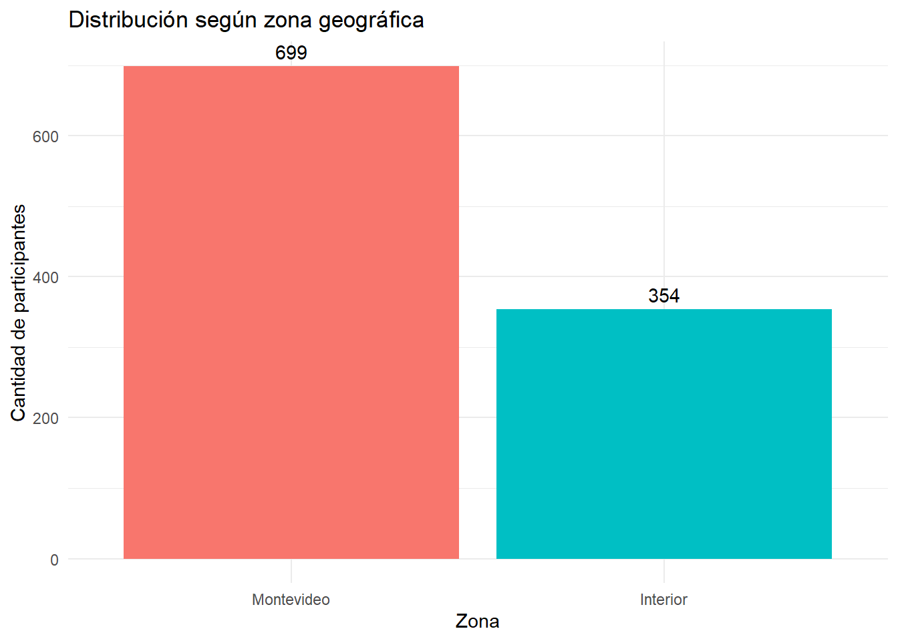
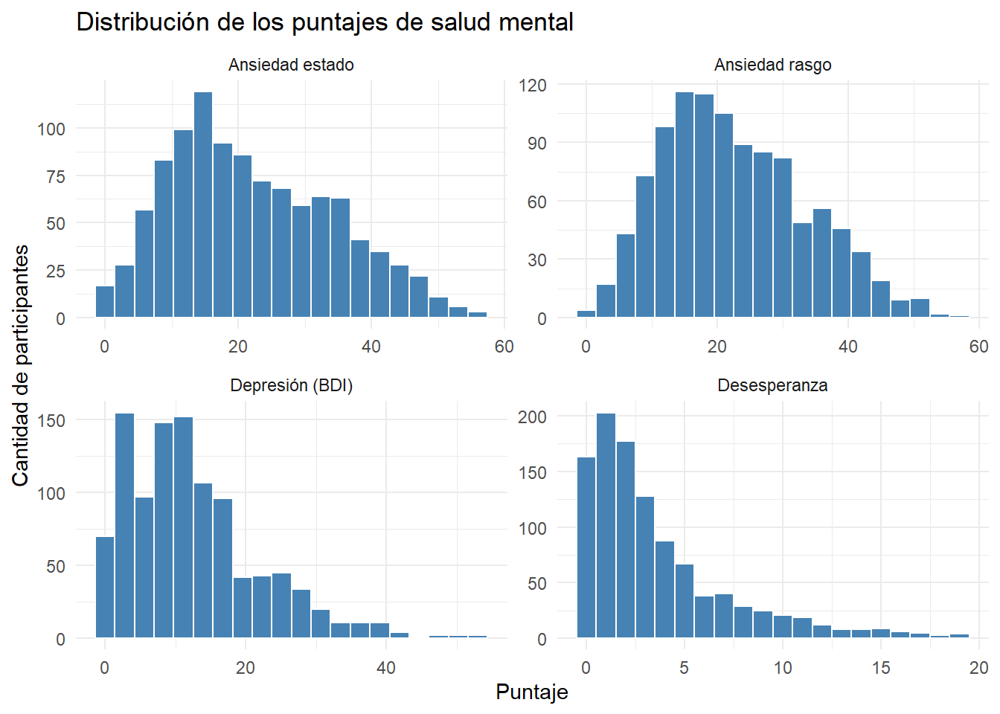
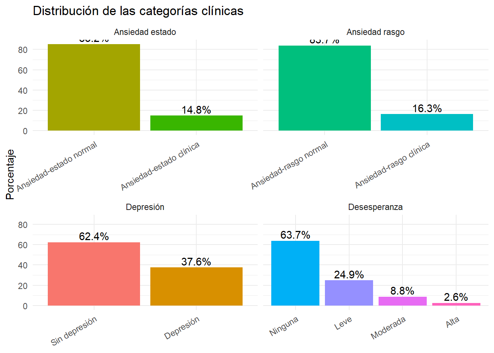
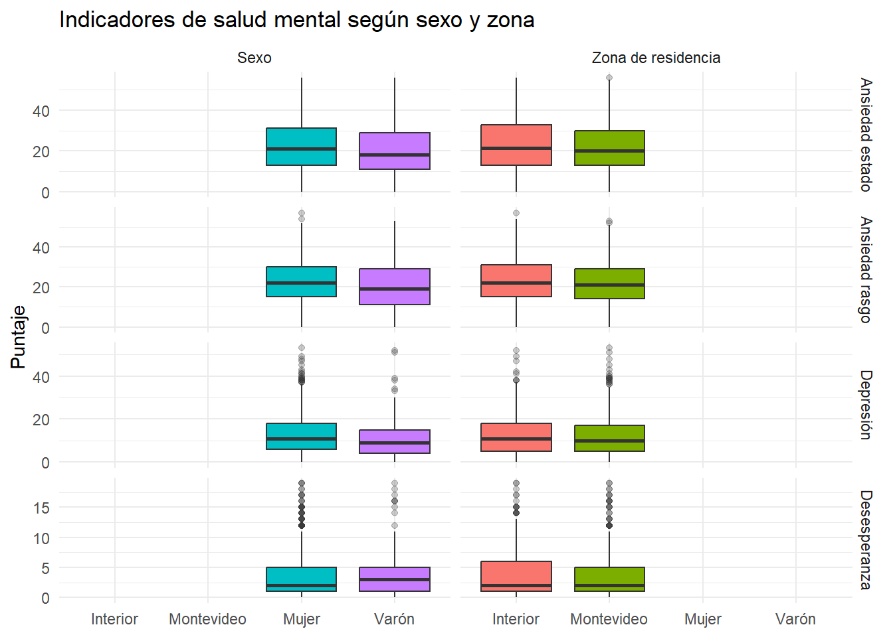
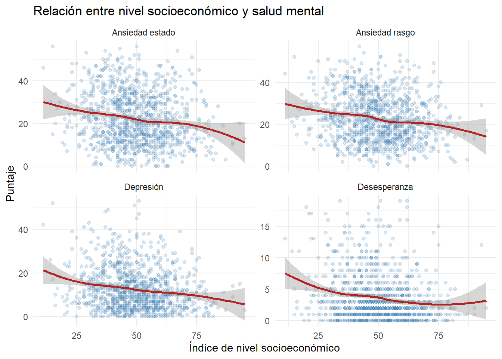
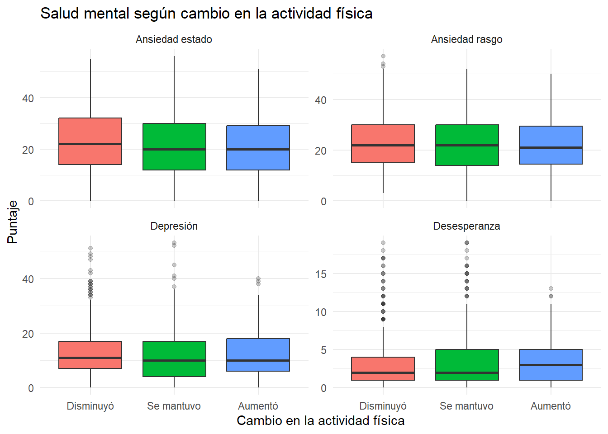
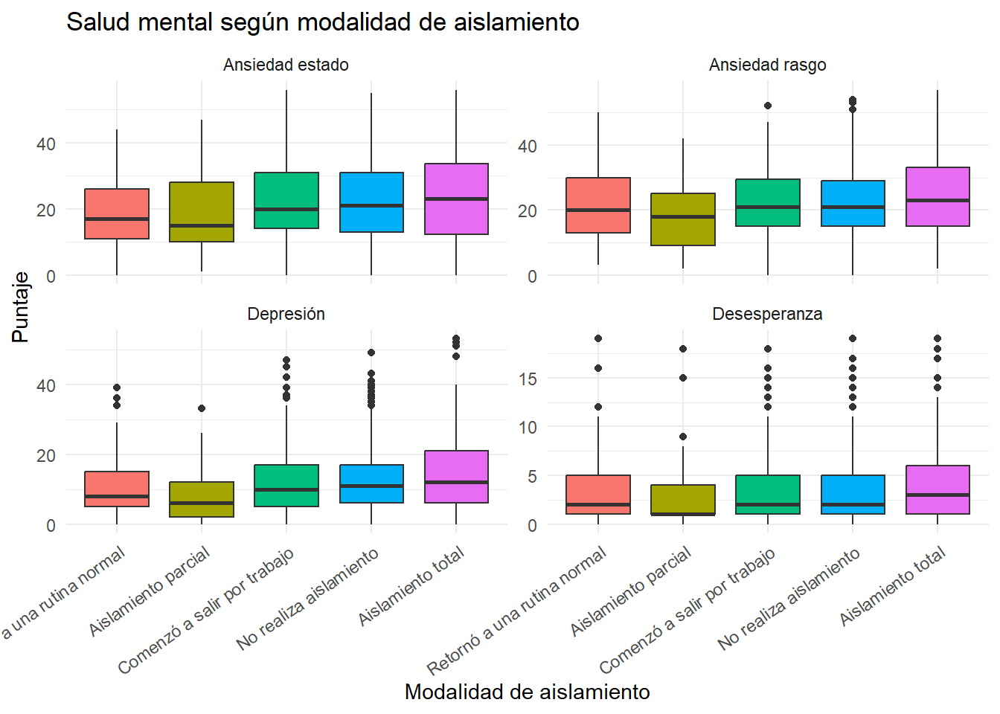

library(tidyverse)
library(readxl)
library(plotly)
library(GGally)Trabajo Final CDR 2026
Introducción
El fenomeno de interés que elegimos para estudiar en este trabajo es la salud mental de personas durante la pandemia (2020). Se exploraran las posibles relaciones que existen entre su salud mental, medida por varias escalas psicologicas como el BDI, STAI, etc, con ciertas caracteristicas de su estilo de vida, nivel socioeconomico, lugar de residencia, etc.
El estudio se realizó a través de un formulario online que circuló por redes sociales, páginas institucionales de la UdelaR, y se difundió a través de medios de prensa. Se realizaron las gestiones pertinentes ante el Comité de Ética en Investigación de la FP-UdelaR, obteniéndose las aprobaciones correspondientes.
La recogida de datos se realizó entre el 30/5 y el 20/7 del 2020, obteniéndose un total de 1059 respuestas. Se convocó a participar a personas residentes en Uruguay de 18 años o más, que no tuvieran patologías psiquiátricas graves, discapacidad intelectual o intentos de suicidio recientes. A las mismas, se les aplicó un cuestionario online que evaluaba diversas variables sociodemográficas, condiciones en las vive la pandemia, condiciones de la vivienda, convivientes, patologías asociadas a mayor riesgo de COVID, actividades que realiza, nivel educativo, consumo de sustancias, entre otras. Además, se aplicaron diversos instrumentos estandarizados: INSE (Índice de nivel socioeconómico), BDI-II (Inventario de depresión de Beck), STAI (Inventario de ansiedad estado-rasgo) y HS (Escala de desesperanza), entre otras.
Dichas escalas evalúan el nivel socioeconómico, síntomas de depresión, síntomas de ansiedad (actual y a medio plazo), y la desesperanza que es un predictor de riesgo suicida. De la enorme cantidad de variables estudiadas, se hará un recorte adecuado al trabajo que estamos realizando.
El objetivo del trabajo es describir los indicadores de depresión, ansiedad y desesperanza observados en una muestra de adultos durante la pandemia de COVID-19 y explorar su relación con características sociodemográficas, socioeconómicas, condiciones de aislamiento y cambios en la actividad física.
Una vez descritas las principales características de la muestra, el análisis se organiza en torno a cuatro preguntas. En primer lugar, se examina la distribución de los puntajes de depresión, ansiedad y desesperanza, así como la proporción de participantes incluida en cada categoría clínica. A continuación, se exploran posibles diferencias según sexo y zona de residencia. En tercer lugar, se analiza la relación entre el nivel socioeconómico y los indicadores de salud mental. Finalmente, se estudia la relación de estos indicadores con los cambios en la actividad física y con la modalidad de aislamiento.
Se analizan 4 escalas que evalúan síntomas psicopatológicos, relacionados con problemas de salud mental de gran prevalencia (depresión -BDI- y ansiedad estado y rasgo -STAI.E y STAI.R) así como la escala de desesperanza que es un predictor de riesgo suicida (HS). Luego además, se establece una categorización de dichos puntajes en función de su significación clínica, a saber:
BDI-Cat: 0, sin depresión; 1, depresión clínica.
STAI.E.Cat: 0, ansiedad “normal”; 1, ansiedad en rango clínico.
STAI.R.Cat: 0, ansiedad “normal”; 1, ansiedad en rango clínico.
HS.Cat: 0, Ninguna; 1 leve; 2, moderada; 3 alta.
los análisis de intensidad y asociación se utilizan los puntajes de las escalas (BDI, STAI.E, STAI.R y HS), debido a que conservan toda la variabilidad de las respuestas. Las variables categorizadas se utilizan para describir la proporción de participantes ubicada en los diferentes niveles clínicos. Estas categorías representan niveles de sintomatología derivados de escalas de autorreporte y no equivalen, por sí solas, a un diagnóstico clínico.
Buscaremos responder a las siguientes preguntas:
¿Cómo se distribuyen la depresión, la ansiedad y la desesperanza en la muestra?
¿Existen diferencias en estos indicadores según sexo y zona de residencia?
¿Qué relación existe entre nivel socioeconómico y salud mental?
¿La reducción de la actividad física y las condiciones de aislamiento se relacionan con peores indicadores de salud mental?
En el siguiente chunk cargamos las librerias necesarias para poder correr el código:
Datos
Los datos pertencen a una encuesta realizada durante la pandemia.
La base original contenía 1.059 respuestas y 375 variables. Para proteger la privacidad de los participantes, se eliminaron los correos electrónicos y todas las variables que permitieran identificarlos. También se identificaron seis participantes que habían respondido dos veces, conservándose cronológicamente la primera respuesta de cada uno. Se seleccionaron las 53 variables relevantes para los objetivos del trabajo y se revisaron valores extremos e inconsistentes. Como resultado, se obtuvo una base anonimizada de 1.053 participantes y 53 variables. Todos los análisis presentados a continuación parten de esta base anonimizada.
Entre ellas tenemos:
| Variable | Tipo | Descripción |
|---|---|---|
| Demografía | ||
Sexo |
Categórica (0/1) | Sexo del participante |
Edad |
Numérica | Edad en años |
Departamento |
Categórica | Departamento de residencia |
Educacion |
Categórica ordinal | Nivel educativo alcanzado |
Trabajo.recod |
Categórica | Situación laboral (recodificada) |
Salud |
Categórica | Si trabaja en el sector salud, y en qué área. |
Desempleo.ahora |
Categórica | Si perdió el empleo durante la cuarentena. |
| Condiciones de aislamiento | ||
Tipo.aislamiento.recod |
Categórica | Modalidad o grado de aislamiento realizado |
Dias.aislamiento |
Numérica | Días acumulados de aislamiento al momento de responder |
Horas.aislamiento |
Numérica | Horas diarias en aislamiento |
Solo.cuarentena, Pareja.cuarentena, Familia.cuarentena, Amigos.cuarentena, Hijos.cuarentena |
Dummy (0/1) c/u | Convivencia con cada tipo de conviviente durante la cuarentena. |
Teletrabajo |
Categórica | Modalidad de trabajo durante la cuarentena |
Cuantas.personas |
Numérica | Cantidad de convivientes |
Aire.libre |
Dummy (0/1) | Acceso a espacio al aire libre en la vivienda |
Metros |
Numérica | Metros cuadrados de la vivienda (limpiada — ver Sección de limpieza) |
Mt.persona |
Numérica | Metros cuadrados por persona conviviente |
Fisica.antes, Fisica.ahora |
Numérica | Frecuencia de actividad física, antes y durante la cuarentena |
| Contexto socioeconómico | ||
INSE |
Numérica | Índice de Nivel Socioeconómico (calculado) |
INSE.Cat |
Categórica ordinal | Categoría del INSE (nivel socioeconómico) |
Personas.hogar |
Numérica | Cantidad de personas en el hogar |
Ingresos |
Categórica ordinal | ¨Personas que reciben ingresos en el hogar. |
Ingresos.INSE |
Numérica | Puntaje del INSE para la cantidad de personas con ingresos. |
Estudios.sostenedor |
Categórica ordinal | Nivel educativo del sostén del hogar |
Cobertura.sostenedor |
Categórica | Cobertura de salud del sostén del hogar |
Baños, Automovil, TV, Heladera, Domestico |
Numérica/Dummy | Indicadores de bienes/servicios del hogar (insumos del INSE) |
| Condiciones de salud preexistentes | ||
Asma, EPOC, Hipertension, Cardiacas, Diabetes, Inmunodepresion, Trastornos.mentales, Ninguna |
Dummy (0/1) c/u | Condiciones de salud autorreportadas |
| Variables de resultado — salud mental | ||
BDI |
Numérica (0-63) | Puntaje total del Inventario de Depresión de Beck |
BDI.Cat |
Categórica ordinal | Categoría de depresión (sin depresión o depresión en rango clínico) |
STAI.E |
Numérica (0-60) | Puntaje de ansiedad estado (STAI) |
STAI.E.Cat |
Categórica ordinal | Categoría de ansiedad estado (normal o clínica) |
STAI.R |
Numérica (0-60) | Puntaje de ansiedad rasgo (STAI) |
STAI.R.Cat |
Categórica ordinal | Categoría de ansiedad rasgo (normal o clínica) |
SA.ANS, SA.DEP |
Numérica | Puntajes de las subescalas de ansiedad y depresión del SA-90 |
HS |
Numérica (0-20) | Puntaje de desesperanza (Escala de desesperanza de Beck) |
HS.Cat |
Categórica ordinal | Categoría de la escala de desesperanza (ninguna, leve, moderada, alta) |
| Temporal | ||
Semana |
Numérica | Semana de la cuarentena en que se respondió la encuesta |
Los datos ya estaban procesados de entrada, por ejemplo, habian variables recodificadas que, como no presentan una perdida de información comparandolas a como estaban antes, las utilizamos en vez de las originales. La recodificación se realizó con fines de facilitar los análisis. En este chunk nos quedamos con las variables mas relevantes para el analisis y eliminamos respuestas repetidas. Por privacidad, excluimos las direcciones de correo electrónico de los participantes, solo los utilizamos para retirar las respuestas repetidas. También corregimos datos de tamaño de vivienda como por ejemplo una vivienda de 10000 m2 en Montevideo, que pusimos como NA y luego cambiamos NA de las variables salud y desempleo, que por la estructura de la encuesta las transformamos en “No aplica”.
Corrimos este codigo solo una vez y luego, creamos un nuevo csv ya limpio para poder subir a Github sin problemas:
El código que se utilizó para ello fue (se adjunta ahora pero no ejecutable):
datos <- read_xlsx(“datos trabajo final.xlsx”, sheet = “Base datos columnas primera tom”)
mutate( Metros = case_when( Metros > 5000 & Departamento %in% c(“MONTEVIDEO”, “CANELONES”) ~ NA_real_, Metros > 15000 ~ NA_real_, TRUE ~ Metros ),
Mt.persona = ifelse( is.na(Metros), NA_real_, Mt.persona ),
Salud = ifelse( is.na(Salud), “No aplica”, as.character(Salud) ),
Desempleo.ahora = ifelse( is.na(Desempleo.ahora), “No aplica”, as.character(Desempleo.ahora) ),
Fisica.antes = if_else( Fisica.antes > 10, NA_real_, Fisica.antes ),
Fisica.ahora = if_else( Fisica.ahora > 10, NA_real_, Fisica.ahora ),
Horas.aislamiento = if_else( Horas.aislamiento > 24, NA_real_, Horas.aislamiento ) )
datos_limpio <- read_csv(
"datos_limpios.csv",
show_col_types = FALSE
) %>%
mutate(
# Sexo
Sexo = factor(
Sexo,
levels = c(0, 1),
labels = c("Mujer", "Varón")
),
# Zona de residencia
Zona = factor(
if_else(
Departamento == "MONTEVIDEO",
"Montevideo",
"Interior"
),
levels = c("Montevideo", "Interior")
),
# BDI: 0 = sin depresión; 1, 2 o 3 = depresión
BDI_categoria = factor(
if_else(BDI.Cat == 0, 0, 1),
levels = c(0, 1),
labels = c(
"Sin depresión",
"Depresión"
)
),
# Ansiedad estado
STAI_E_categoria = factor(
STAI.E.Cat,
levels = c(0, 1),
labels = c(
"Ansiedad-estado normal",
"Ansiedad-estado clínica"
)
),
# Ansiedad rasgo
STAI_R_categoria = factor(
STAI.R.Cat,
levels = c(0, 1),
labels = c(
"Ansiedad-rasgo normal",
"Ansiedad-rasgo clínica"
)
),
# Desesperanza
HS_categoria = factor(
HS.Cat,
levels = c(0, 1, 2, 3),
labels = c(
"Ninguna",
"Leve",
"Moderada",
"Alta"
),
ordered = TRUE
),
# Nivel socioeconómico
INSE_categoria = factor(
INSE.Cat,
levels = c(0, 1, 2, 3, 4, 5, 6),
labels = c(
"B-",
"B+",
"M-",
"M",
"M+",
"A-",
"A+"
),
ordered = TRUE
),
# Tipo de aislamiento
Aislamiento = factor(
Tipo.aislamiento.recod,
levels = c(0, 1, 2, 3, 4),
labels = c(
"Retornó a una rutina normal",
"Aislamiento parcial",
"Comenzó a salir por trabajo",
"No realiza aislamiento",
"Aislamiento total"
)
),
# Teletrabajo
Teletrabajo_categoria = factor(
Teletrabajo,
levels = c(0, 1, 2, 3),
labels = c(
"No tiene trabajo",
"No realiza teletrabajo",
"Teletrabaja la mitad o menos de sus tareas",
"Teletrabaja todas o casi todas sus tareas"
)
)
)Por razones de confidencialidad, la base original con datos identificatorios no se incluye en el repositorio. El análisis reproducible comienza a partir de “datos_limpios.csv”, que contiene exclusivamente la información anonimizada necesaria para el trabajo.
Análisis Exploratorio
Para comenzar, vamos a analizar a la poblacion de nuestra encuesta, para ver datos de sus edades, sexo, INSE y zona geografica con sus respectivas visualizaciones.
# Resumen numérico de edad e INSE
datos_limpio %>%
summarise(
edad_media = mean(Edad, na.rm = TRUE),
edad_mediana = median(Edad, na.rm = TRUE),
edad_sd = sd(Edad, na.rm = TRUE),
edad_minima = min(Edad, na.rm = TRUE),
edad_maxima = max(Edad, na.rm = TRUE),
inse_media = mean(INSE, na.rm = TRUE),
inse_mediana = median(INSE, na.rm = TRUE),
inse_sd = sd(INSE, na.rm = TRUE),
inse_minimo = min(INSE, na.rm = TRUE),
inse_maximo = max(INSE, na.rm = TRUE)
)# A tibble: 1 × 10
edad_media edad_mediana edad_sd edad_minima edad_maxima inse_media
<dbl> <dbl> <dbl> <dbl> <dbl> <dbl>
1 37.4 35 13.4 18 80 49.9
# ℹ 4 more variables: inse_mediana <dbl>, inse_sd <dbl>, inse_minimo <dbl>,
# inse_maximo <dbl># Distribución según sexo
datos_limpio %>%
count(Sexo) %>%
mutate(
porcentaje = round(100 * n / sum(n), 1)
)# A tibble: 2 × 3
Sexo n porcentaje
<fct> <int> <dbl>
1 Mujer 836 79.4
2 Varón 217 20.6# Distribución según categoría de nivel socioeconómico
datos_limpio %>%
count(INSE_categoria) %>%
mutate(
porcentaje = round(100 * n / sum(n), 1)
)# A tibble: 7 × 3
INSE_categoria n porcentaje
<ord> <int> <dbl>
1 B- 12 1.1
2 B+ 48 4.6
3 M- 85 8.1
4 M 163 15.5
5 M+ 282 26.8
6 A- 320 30.4
7 A+ 143 13.6# Distribución según zona geográfica
datos_limpio %>%
count(Zona) %>%
mutate(
porcentaje = round(100 * n / sum(n), 1)
)# A tibble: 2 × 3
Zona n porcentaje
<fct> <int> <dbl>
1 Montevideo 699 66.4
2 Interior 354 33.6# Distribución de la edad
ggplot(datos_limpio, aes(x = Edad)) +
geom_histogram(
binwidth = 5,
fill = "steelblue",
color = "white"
) +
labs(
title = "Distribución de la edad",
x = "Edad en años",
y = "Cantidad de participantes"
) +
theme_minimal()
# Distribución según sexo
ggplot(datos_limpio, aes(x = Sexo)) +
geom_bar(fill = "steelblue") +
geom_text(
stat = "count",
aes(label = after_stat(count)),
vjust = -0.5
) +
labs(
title = "Distribución de la muestra según sexo",
x = "Sexo",
y = "Cantidad de participantes"
) +
theme_minimal()
# Distribución según nivel socioeconómico
ggplot(datos_limpio, aes(x = INSE_categoria)) +
geom_bar(fill = "steelblue") +
geom_text(
stat = "count",
aes(label = after_stat(count)),
vjust = -0.5
) +
labs(
title = "Distribución según nivel socioeconómico",
x = "Categoría de INSE",
y = "Cantidad de participantes"
) +
theme_minimal()
# Distribución según zona geográfica
ggplot(datos_limpio, aes(x = Zona, fill = Zona)) +
geom_bar(show.legend = FALSE) +
geom_text(
stat = "count",
aes(label = after_stat(count)),
vjust = -0.5
) +
labs(
title = "Distribución según zona geográfica",
x = "Zona",
y = "Cantidad de participantes"
) +
theme_minimal()
La edad media es de 37.4 años, la mediana son 35 años y el rango va desde 18 años hasta 80.
En la muestra hay una alta proporcion de mujeres, siendo un 79% de mujeres.
El INSE (Índice de Nivel Socioeconómico) se concentra en las categorias medias altas, concentrandose el 57% de la muestra entre las categorías M+ (media alta) y A- (alta), con muy poca gente en los extremos.
La mayoria de gente (66.4%) es de Montevideo. El resto, pertenece al interior. Como en algunos departamentos habian muy pocas observaciones, decidimos agruparlos en Montevideo vs Interior para que quedaran dos grupos bien diferenciados con una buena cantidad de observaciones.
1. Distribución de los indicadores de salud mental
La primera pregunta busca describir la presencia e intensidad de los indicadores de depresión, ansiedad y desesperanza en la muestra. Para ello se presentan, en primer lugar, medidas de resumen de los puntajes de las cuatro escalas. Posteriormente, se examinan sus distribuciones y la proporción de participantes comprendida en cada categoría clínica.
Resumen de los puntajes
puntajes_long <- datos_limpio %>%
select(BDI, STAI.E, STAI.R, HS) %>%
pivot_longer(
cols = everything(),
names_to = "Indicador",
values_to = "Puntaje"
) %>%
mutate(
Indicador = recode(
Indicador,
BDI = "Depresión (BDI)",
STAI.E = "Ansiedad estado",
STAI.R = "Ansiedad rasgo",
HS = "Desesperanza"
)
)
resumen_puntajes <- puntajes_long %>%
group_by(Indicador) %>%
summarise(
n = sum(!is.na(Puntaje)),
Media = mean(Puntaje, na.rm = TRUE),
Mediana = median(Puntaje, na.rm = TRUE),
DE = sd(Puntaje, na.rm = TRUE),
Mínimo = min(Puntaje, na.rm = TRUE),
Máximo = max(Puntaje, na.rm = TRUE),
.groups = "drop"
)
knitr::kable(
resumen_puntajes,
digits = 2,
caption = "Resumen de los indicadores de salud mental"
)| Indicador | n | Media | Mediana | DE | Mínimo | Máximo |
|---|---|---|---|---|---|---|
| Ansiedad estado | 1053 | 22.25 | 20 | 12.07 | 0 | 56 |
| Ansiedad rasgo | 1053 | 22.69 | 22 | 11.02 | 0 | 57 |
| Depresión (BDI) | 1053 | 12.52 | 10 | 9.44 | 0 | 53 |
| Desesperanza | 1053 | 3.63 | 2 | 3.77 | 0 | 19 |
Histogramas
ggplot(puntajes_long, aes(x = Puntaje)) +
geom_histogram(
bins = 20,
fill = "steelblue",
color = "white"
) +
facet_wrap(
~Indicador,
scales = "free"
) +
labs(
title = "Distribución de los puntajes de salud mental",
x = "Puntaje",
y = "Cantidad de participantes"
) +
theme_minimal()
Categorías clínicas etiquetadas
categorias_clinicas <- bind_rows(
datos_limpio %>%
count(BDI_categoria) %>%
transmute(
Indicador = "Depresión",
Categoría = as.character(BDI_categoria),
n
),
datos_limpio %>%
count(STAI_E_categoria) %>%
transmute(
Indicador = "Ansiedad estado",
Categoría = as.character(STAI_E_categoria),
n
),
datos_limpio %>%
count(STAI_R_categoria) %>%
transmute(
Indicador = "Ansiedad rasgo",
Categoría = as.character(STAI_R_categoria),
n
),
datos_limpio %>%
count(HS_categoria) %>%
transmute(
Indicador = "Desesperanza",
Categoría = as.character(HS_categoria),
n
)
) %>%
group_by(Indicador) %>%
mutate(
Porcentaje = round(100 * n / sum(n), 1)
) %>%
ungroup()
knitr::kable(
categorias_clinicas,
caption = "Distribución de las categorías clínicas",
col.names = c("Indicador", "Categoría", "Frecuencia", "Porcentaje")
)| Indicador | Categoría | Frecuencia | Porcentaje |
|---|---|---|---|
| Depresión | Sin depresión | 657 | 62.4 |
| Depresión | Depresión | 396 | 37.6 |
| Ansiedad estado | Ansiedad-estado normal | 897 | 85.2 |
| Ansiedad estado | Ansiedad-estado clínica | 156 | 14.8 |
| Ansiedad rasgo | Ansiedad-rasgo normal | 881 | 83.7 |
| Ansiedad rasgo | Ansiedad-rasgo clínica | 172 | 16.3 |
| Desesperanza | Ninguna | 671 | 63.7 |
| Desesperanza | Leve | 262 | 24.9 |
| Desesperanza | Moderada | 93 | 8.8 |
| Desesperanza | Alta | 27 | 2.6 |
Gráfico de categorías
categorias_clinicas %>%
mutate(
Categoría = factor(
Categoría,
levels = c(
"Sin depresión",
"Depresión",
"Ansiedad-estado normal",
"Ansiedad-estado clínica",
"Ansiedad-rasgo normal",
"Ansiedad-rasgo clínica",
"Ninguna",
"Leve",
"Moderada",
"Alta"
)
)
) %>%
ggplot(
aes(
x = Categoría,
y = Porcentaje,
fill = Categoría
)
) +
geom_col(show.legend = FALSE) +
geom_text(
aes(label = paste0(Porcentaje, "%")),
vjust = -0.3
) +
facet_wrap(
~Indicador,
scales = "free_x"
) +
labs(
title = "Distribución de las categorías clínicas",
x = NULL,
y = "Porcentaje"
) +
theme_minimal() +
theme(
axis.text.x = element_text(
angle = 30,
hjust = 1
)
)
Los puntajes de los cuatro indicadores presentaron distribuciones asimétricas hacia los valores elevados, como se observa en los histogramas y en las medias superiores a las medianas. El puntaje medio de depresión fue 12,52 (DE = 9,44), mientras que las medias de ansiedad estado y ansiedad rasgo fueron 22,25 (DE = 12,07) y 22,69 (DE = 11,02), respectivamente. La desesperanza presentó una media de 3,63 (DE = 3,77) y una mediana de 2. En cuanto a las categorías clínicas, el 37,6 % de la muestra fue clasificado con depresión, el 14,8 % con ansiedad estado clínica y el 16,3 % con ansiedad rasgo clínica. Respecto de la desesperanza, el 63,7 % no presentó desesperanza, el 24,9 % se ubicó en el nivel leve, el 8,8 % en el moderado y el 2,6 % en el alto. Estos resultados muestran que, aunque la mayoría no se encontraba en las categorías clínicas más elevadas, una proporción relevante presentó sintomatología depresiva, ansiosa o desesperanza.
2. Diferencias según sexo y zona de residencia
La segunda pregunta examina si los puntajes de depresión, ansiedad y desesperanza presentan diferencias según sexo y zona de residencia. Dado que el objetivo es comparar la intensidad de los indicadores, se utilizan los puntajes continuos de las escalas. Se presentan medidas de resumen y diagramas de caja para comparar la distribución de los puntajes entre los grupos.
Preparación de los datos.
comparaciones_grupos <- bind_rows(
datos_limpio %>%
select(Sexo, BDI, STAI.E, STAI.R, HS) %>%
pivot_longer(
cols = c(BDI, STAI.E, STAI.R, HS),
names_to = "Indicador",
values_to = "Puntaje"
) %>%
transmute(
Comparación = "Sexo",
Grupo = as.character(Sexo),
Indicador,
Puntaje
),
datos_limpio %>%
select(Zona, BDI, STAI.E, STAI.R, HS) %>%
pivot_longer(
cols = c(BDI, STAI.E, STAI.R, HS),
names_to = "Indicador",
values_to = "Puntaje"
) %>%
transmute(
Comparación = "Zona de residencia",
Grupo = as.character(Zona),
Indicador,
Puntaje
)
) %>%
mutate(
Indicador = recode(
Indicador,
BDI = "Depresión",
STAI.E = "Ansiedad estado",
STAI.R = "Ansiedad rasgo",
HS = "Desesperanza"
)
)Tabla comparativa
resumen_grupos <- comparaciones_grupos %>%
group_by(Comparación, Grupo, Indicador) %>%
summarise(
n = sum(!is.na(Puntaje)),
Media = mean(Puntaje, na.rm = TRUE),
Mediana = median(Puntaje, na.rm = TRUE),
DE = sd(Puntaje, na.rm = TRUE),
.groups = "drop"
)
knitr::kable(
resumen_grupos,
digits = 2,
caption = "Indicadores de salud mental según sexo y zona"
)| Comparación | Grupo | Indicador | n | Media | Mediana | DE |
|---|---|---|---|---|---|---|
| Sexo | Mujer | Ansiedad estado | 836 | 22.69 | 21.0 | 11.96 |
| Sexo | Mujer | Ansiedad rasgo | 836 | 23.17 | 22.0 | 10.83 |
| Sexo | Mujer | Depresión | 836 | 12.96 | 11.0 | 9.42 |
| Sexo | Mujer | Desesperanza | 836 | 3.56 | 2.0 | 3.74 |
| Sexo | Varón | Ansiedad estado | 217 | 20.57 | 18.0 | 12.39 |
| Sexo | Varón | Ansiedad rasgo | 217 | 20.84 | 19.0 | 11.55 |
| Sexo | Varón | Depresión | 217 | 10.81 | 9.0 | 9.31 |
| Sexo | Varón | Desesperanza | 217 | 3.87 | 3.0 | 3.91 |
| Zona de residencia | Interior | Ansiedad estado | 354 | 23.04 | 21.5 | 12.43 |
| Zona de residencia | Interior | Ansiedad rasgo | 354 | 23.60 | 22.0 | 11.67 |
| Zona de residencia | Interior | Depresión | 354 | 12.98 | 11.0 | 9.98 |
| Zona de residencia | Interior | Desesperanza | 354 | 3.94 | 2.0 | 4.04 |
| Zona de residencia | Montevideo | Ansiedad estado | 699 | 21.85 | 20.0 | 11.87 |
| Zona de residencia | Montevideo | Ansiedad rasgo | 699 | 22.23 | 21.0 | 10.65 |
| Zona de residencia | Montevideo | Depresión | 699 | 12.28 | 10.0 | 9.15 |
| Zona de residencia | Montevideo | Desesperanza | 699 | 3.47 | 2.0 | 3.62 |
Diagramas de caja
ggplot(
comparaciones_grupos,
aes(x = Grupo, y = Puntaje, fill = Grupo)
) +
geom_boxplot(
show.legend = FALSE,
outlier.alpha = 0.25
) +
facet_grid(
Indicador ~ Comparación,
scales = "free_y"
) +
labs(
title = "Indicadores de salud mental según sexo y zona",
x = NULL,
y = "Puntaje"
) +
theme_minimal()
Las comparaciones descriptivas muestran que las mujeres presentaron mayores puntajes medios de depresión (12,96 frente a 10,81), ansiedad estado (22,69 frente a 20,57) y ansiedad rasgo (23,17 frente a 20,84) que los varones. En desesperanza se observó el patrón contrario, aunque la diferencia fue pequeña: la media fue 3,56 en las mujeres y 3,87 en los varones. En relación con la zona de residencia, las personas del interior presentaron medias algo mayores que las residentes en Montevideo en los cuatro indicadores: depresión (12,98 frente a 12,28), ansiedad estado (23,04 frente a 21,85), ansiedad rasgo (23,60 frente a 22,23) y desesperanza (3,94 frente a 3,47). Estas diferencias son descriptivas y, en general, de magnitud reducida; por lo tanto, no permiten afirmar por sí solas que existan diferencias estadísticamente significativas en la población. Además, deben interpretarse considerando la sobrerrepresentación de mujeres y residentes de Montevideo en la muestra.
3. Nivel socioeconómico y salud mental
La tercera pregunta analiza la relación entre el nivel socioeconómico y los indicadores de salud mental. Para conservar la información disponible, se utiliza el puntaje continuo del INSE y se calculan correlaciones de Spearman con los puntajes de depresión, ansiedad y desesperanza. Este coeficiente permite evaluar relaciones monotónicas sin asumir una distribución normal de las variables.
Correlaciones
relaciones_inse <- datos_limpio %>%
select(INSE, BDI, STAI.E, STAI.R, HS) %>%
pivot_longer(
cols = c(BDI, STAI.E, STAI.R, HS),
names_to = "Indicador",
values_to = "Puntaje"
) %>%
mutate(
Indicador = recode(
Indicador,
BDI = "Depresión",
STAI.E = "Ansiedad estado",
STAI.R = "Ansiedad rasgo",
HS = "Desesperanza"
)
)
correlaciones_inse <- relaciones_inse %>%
group_by(Indicador) %>%
summarise(
n = sum(complete.cases(INSE, Puntaje)),
Rho = cor(
INSE,
Puntaje,
method = "spearman",
use = "complete.obs"
),
p = cor.test(
INSE,
Puntaje,
method = "spearman",
exact = FALSE
)$p.value,
.groups = "drop"
)
knitr::kable(
correlaciones_inse,
digits = 3,
caption = "Correlaciones entre INSE y salud mental"
)| Indicador | n | Rho | p |
|---|---|---|---|
| Ansiedad estado | 1053 | -0.152 | 0 |
| Ansiedad rasgo | 1053 | -0.164 | 0 |
| Depresión | 1053 | -0.160 | 0 |
| Desesperanza | 1053 | -0.164 | 0 |
Gráficos
ggplot(
relaciones_inse,
aes(x = INSE, y = Puntaje)
) +
geom_point(
alpha = 0.2,
color = "steelblue"
) +
geom_smooth(
method = "loess",
se = TRUE,
color = "firebrick"
) +
facet_wrap(
~Indicador,
scales = "free_y"
) +
labs(
title = "Relación entre nivel socioeconómico y salud mental",
x = "Índice de nivel socioeconómico",
y = "Puntaje"
) +
theme_minimal()`geom_smooth()` using formula = 'y ~ x'
El nivel socioeconómico presentó correlaciones negativas y estadísticamente significativas con los cuatro indicadores de salud mental: depresión (rho = -0,160), ansiedad estado (rho = -0,152), ansiedad rasgo (rho = -0,164) y desesperanza (rho = -0,164); en todos los casos, p < 0,001. Esto indica que un mayor nivel socioeconómico tendió a asociarse con menores puntajes de depresión, ansiedad y desesperanza. No obstante, todas las correlaciones fueron débiles, por lo que el nivel socioeconómico explica solamente una parte reducida de las diferencias observadas. Debido al carácter transversal y observacional de los datos, no puede establecerse una relación causal.
4. Actividad física, aislamiento y salud mental
La cuarta pregunta explora si los cambios en la actividad física y las distintas modalidades de aislamiento se relacionan con los indicadores de salud mental. Para analizar la actividad física se compara el valor informado antes y durante la cuarentena, clasificando a los participantes según si su actividad disminuyó, se mantuvo o aumentó. Posteriormente se comparan los puntajes de salud mental entre las diferentes modalidades de aislamiento.
Cambio de actividad física
datos_limpio <- datos_limpio %>%
mutate(
Cambio_actividad = Fisica.ahora - Fisica.antes,
Cambio_actividad_categoria = case_when(
is.na(Cambio_actividad) ~ NA_character_,
Cambio_actividad < 0 ~ "Disminuyó",
Cambio_actividad == 0 ~ "Se mantuvo",
Cambio_actividad > 0 ~ "Aumentó"
),
Cambio_actividad_categoria = factor(
Cambio_actividad_categoria,
levels = c(
"Disminuyó",
"Se mantuvo",
"Aumentó"
)
)
)Tabla según cambio de actividad
resumen_actividad <- datos_limpio %>%
select(
Cambio_actividad_categoria,
BDI,
STAI.E,
STAI.R,
HS
) %>%
filter(!is.na(Cambio_actividad_categoria)) %>%
pivot_longer(
cols = c(BDI, STAI.E, STAI.R, HS),
names_to = "Indicador",
values_to = "Puntaje"
) %>%
mutate(
Indicador = recode(
Indicador,
BDI = "Depresión",
STAI.E = "Ansiedad estado",
STAI.R = "Ansiedad rasgo",
HS = "Desesperanza"
)
) %>%
group_by(
Cambio_actividad_categoria,
Indicador
) %>%
summarise(
n = sum(!is.na(Puntaje)),
Media = mean(Puntaje, na.rm = TRUE),
Mediana = median(Puntaje, na.rm = TRUE),
DE = sd(Puntaje, na.rm = TRUE),
Rango_observado = paste0(
min(Puntaje, na.rm = TRUE),
"–",
max(Puntaje, na.rm = TRUE)
),
.groups = "drop"
)
knitr::kable(
resumen_actividad,
digits = 2,
caption = "Salud mental según cambio en la actividad física",
col.names = c(
"Cambio en actividad",
"Indicador",
"n",
"Media",
"Mediana",
"DE",
"Rango observado"
)
)| Cambio en actividad | Indicador | n | Media | Mediana | DE | Rango observado |
|---|---|---|---|---|---|---|
| Disminuyó | Ansiedad estado | 449 | 23.43 | 22 | 12.22 | 0–55 |
| Disminuyó | Ansiedad rasgo | 449 | 23.34 | 22 | 11.25 | 3–57 |
| Disminuyó | Depresión | 449 | 13.49 | 11 | 9.66 | 0–51 |
| Disminuyó | Desesperanza | 449 | 3.45 | 2 | 3.71 | 0–19 |
| Se mantuvo | Ansiedad estado | 400 | 21.60 | 20 | 12.06 | 0–56 |
| Se mantuvo | Ansiedad rasgo | 400 | 22.41 | 22 | 11.00 | 0–52 |
| Se mantuvo | Depresión | 400 | 11.76 | 10 | 9.41 | 0–53 |
| Se mantuvo | Desesperanza | 400 | 3.82 | 2 | 4.06 | 0–19 |
| Aumentó | Ansiedad estado | 147 | 21.19 | 20 | 11.52 | 0–51 |
| Aumentó | Ansiedad rasgo | 147 | 22.12 | 21 | 10.33 | 0–50 |
| Aumentó | Depresión | 147 | 11.90 | 10 | 8.72 | 0–40 |
| Aumentó | Desesperanza | 147 | 3.51 | 3 | 2.91 | 0–13 |
Gráfico de actividad física
datos_limpio %>%
select(
Cambio_actividad_categoria,
BDI,
STAI.E,
STAI.R,
HS
) %>%
filter(!is.na(Cambio_actividad_categoria)) %>%
pivot_longer(
cols = c(BDI, STAI.E, STAI.R, HS),
names_to = "Indicador",
values_to = "Puntaje"
) %>%
mutate(
Indicador = recode(
Indicador,
BDI = "Depresión",
STAI.E = "Ansiedad estado",
STAI.R = "Ansiedad rasgo",
HS = "Desesperanza"
)
) %>%
ggplot(
aes(
x = Cambio_actividad_categoria,
y = Puntaje,
fill = Cambio_actividad_categoria
)
) +
geom_boxplot(
show.legend = FALSE,
outlier.alpha = 0.25
) +
facet_wrap(
~Indicador,
scales = "free_y"
) +
labs(
title = "Salud mental según cambio en la actividad física",
x = "Cambio en la actividad física",
y = "Puntaje"
) +
theme_minimal()
Tabla según aislamiento
resumen_aislamiento <- datos_limpio %>%
select(
Aislamiento,
BDI,
STAI.E,
STAI.R,
HS
) %>%
pivot_longer(
cols = c(BDI, STAI.E, STAI.R, HS),
names_to = "Indicador",
values_to = "Puntaje"
) %>%
mutate(
Indicador = recode(
Indicador,
BDI = "Depresión",
STAI.E = "Ansiedad estado",
STAI.R = "Ansiedad rasgo",
HS = "Desesperanza"
)
) %>%
group_by(Aislamiento, Indicador) %>%
summarise(
n = sum(!is.na(Puntaje)),
Media = mean(Puntaje, na.rm = TRUE),
Mediana = median(Puntaje, na.rm = TRUE),
DE = sd(Puntaje, na.rm = TRUE),
.groups = "drop"
)
knitr::kable(
resumen_aislamiento,
digits = 2,
caption = "Salud mental según modalidad de aislamiento"
)| Aislamiento | Indicador | n | Media | Mediana | DE |
|---|---|---|---|---|---|
| Retornó a una rutina normal | Ansiedad estado | 85 | 18.81 | 17 | 10.30 |
| Retornó a una rutina normal | Ansiedad rasgo | 85 | 21.45 | 20 | 10.68 |
| Retornó a una rutina normal | Depresión | 85 | 10.55 | 8 | 8.34 |
| Retornó a una rutina normal | Desesperanza | 85 | 3.44 | 2 | 3.88 |
| Aislamiento parcial | Ansiedad estado | 49 | 18.02 | 15 | 11.80 |
| Aislamiento parcial | Ansiedad rasgo | 49 | 18.59 | 18 | 10.44 |
| Aislamiento parcial | Depresión | 49 | 8.22 | 6 | 8.03 |
| Aislamiento parcial | Desesperanza | 49 | 2.96 | 1 | 3.91 |
| Comenzó a salir por trabajo | Ansiedad estado | 191 | 22.86 | 20 | 11.64 |
| Comenzó a salir por trabajo | Ansiedad rasgo | 191 | 22.82 | 21 | 10.34 |
| Comenzó a salir por trabajo | Depresión | 191 | 12.23 | 10 | 9.14 |
| Comenzó a salir por trabajo | Desesperanza | 191 | 3.50 | 2 | 3.50 |
| No realiza aislamiento | Ansiedad estado | 514 | 22.28 | 21 | 11.62 |
| No realiza aislamiento | Ansiedad rasgo | 514 | 22.55 | 21 | 10.71 |
| No realiza aislamiento | Depresión | 514 | 12.62 | 11 | 8.95 |
| No realiza aislamiento | Desesperanza | 514 | 3.52 | 2 | 3.61 |
| Aislamiento total | Ansiedad estado | 214 | 23.98 | 23 | 13.72 |
| Aislamiento total | Ansiedad rasgo | 214 | 24.33 | 23 | 12.28 |
| Aislamiento total | Depresión | 214 | 14.30 | 12 | 11.02 |
| Aislamiento total | Desesperanza | 214 | 4.21 | 3 | 4.26 |
Gráfico según aislamiento
datos_limpio %>%
select(Aislamiento, BDI, STAI.E, STAI.R, HS) %>%
pivot_longer(
cols = c(BDI, STAI.E, STAI.R, HS),
names_to = "Indicador",
values_to = "Puntaje"
) %>%
mutate(
Indicador = recode(
Indicador,
BDI = "Depresión",
STAI.E = "Ansiedad estado",
STAI.R = "Ansiedad rasgo",
HS = "Desesperanza"
)
) %>%
ggplot(
aes(
x = Aislamiento,
y = Puntaje,
fill = Aislamiento
)
) +
geom_boxplot(show.legend = FALSE) +
facet_wrap(
~Indicador,
scales = "free_y"
) +
labs(
title = "Salud mental según modalidad de aislamiento",
x = "Modalidad de aislamiento",
y = "Puntaje"
) +
theme_minimal() +
theme(
axis.text.x = element_text(
angle = 35,
hjust = 1
)
)
Entre los participantes con mediciones válidas, 449 disminuyeron su actividad física, 400 la mantuvieron y 147 la aumentaron. Quienes redujeron su actividad presentaron mayores puntajes medios de depresión (13,49), ansiedad estado (23,43) y ansiedad rasgo (23,34) que quienes la mantuvieron o aumentaron. Sin embargo, la desesperanza no siguió el mismo patrón, ya que el grupo que mantuvo su actividad presentó la media más elevada (3,82). En cuanto al aislamiento, las personas que realizaron aislamiento total mostraron las medias más altas en depresión (14,30), ansiedad estado (23,98), ansiedad rasgo (24,33) y desesperanza (4,21), mientras que quienes realizaron aislamiento parcial presentaron las medias más bajas. En conjunto, los resultados sugieren una asociación descriptiva entre la reducción de actividad, el aislamiento más restrictivo y algunos indicadores menos favorables de salud mental. Sin embargo, no permiten establecer causalidad y deben interpretarse considerando las diferencias de tamaño y composición entre los grupos.
Aplicación Shiny
Para complementar el análisis exploratorio, hicimos un dashboard interactivo con Shiny para poder ver las relaciones entre los indicadores de salud mental y las principales variables de contexto.
La app permite elegir el indicador y la variable de cruce, seleccionar que grupos especificos comparar y visualizar tanto el grafico de proporciones como la tabla resumen y la distribucion general del indicador en toda la muestra. Asi, se puede reproducir de forma dinamica cualquiera de los cruces presentados en el Analisis Exploratorio y explorar combinaciones diferentes no incluidas explicitamente en el documento.
La aplicación esta disponible en: https://smacedosanchez.shinyapps.io/saludmentaldurantecovid19/
Conclusiones
En conjunto, los resultados muestran una presencia relevante de indicadores de problemas de salud mental durante la pandemia: el 37,6 % de los participantes presentó algún nivel de sintomatología depresiva —18,1 % leve, 12,3 % moderada y 7,1 % grave—, mientras que el 14,8 % se ubicó en el rango clínico de ansiedad estado y el 16,3 % en el de ansiedad rasgo; además, el 11,4 % presentó niveles moderados o altos de desesperanza. Descriptivamente, las mujeres mostraron mayores puntajes de depresión y ansiedad que los varones, mientras que los residentes del interior presentaron valores ligeramente superiores a los de Montevideo en los cuatro indicadores. El nivel socioeconómico se asoció de forma negativa, débil y estadísticamente significativa con la depresión, la ansiedad y la desesperanza, lo que indica una tendencia hacia menores niveles de sintomatología a medida que aumenta el INSE. Asimismo, quienes redujeron su actividad física presentaron mayores niveles medios de depresión y ansiedad, y quienes realizaron aislamiento total mostraron los valores más elevados en los cuatro indicadores de salud mental. No obstante, estos resultados deben interpretarse con cautela debido al carácter transversal del estudio, al muestreo no probabilístico, a la sobrerrepresentación de mujeres y residentes de Montevideo y a las diferencias de composición entre los grupos; por consiguiente, las asociaciones observadas no permiten establecer relaciones causales ni generalizar directamente los resultados a toda la población uruguaya.